–引言
先啰嗦几句为什么会想到写关于Excel的文章。因为通常的理解，关于Excel的基础教程也好高级进阶的技巧也罢，可谓到处都是，根本不需要再多我这一点内容,况且当我们需要用到Excel某个功能的时候只要直接求教度娘就O了，何苦还要专研之？
最近在分享商业分析知识的时候，实例中所使用的数据分析工具八成是Excel，而并不是什么R、Phython、SPSS等听上去高大上的工具，而事实上， Excel能满足我们绝大部分的数据分析需求。的确，会使用哪些公式、如何VLOOKUP、怎么样弄PIVOT这些都不是问题，真正决定我们是不是用对了Excel的关键，是能不能把Excel用的聪明、用的漂亮，最最起码不能在Excel里犯二。
所以，看似人人都会用的工具Excel，要用得「聪明漂亮」，还是值得我们好好说道说道这其中的门道的。好比武侠片里的大侠，修炼的绝世武功得有上乘的内功心法配合精妙的外部招式，今天就先从心法开始说起，我们称此心法为「Excel之道」！
–正文
先欣赏一下那些别人家的Excel数据表：
表一
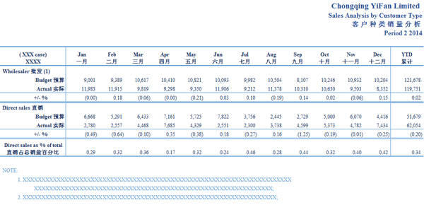
表二
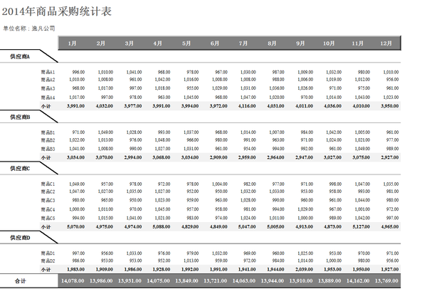
表三
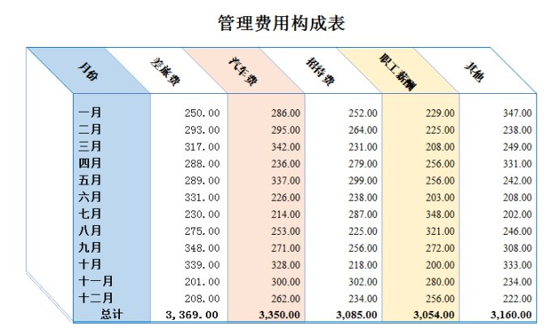
再对比一下可能是平时你自己正在捣鼓的一些Excel样式：
表一
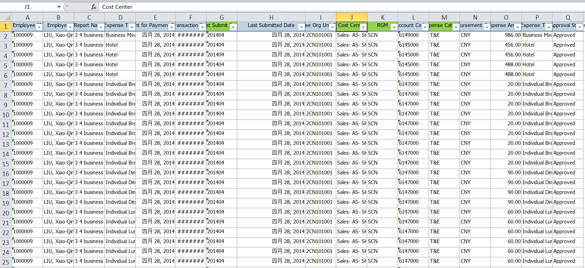
表二
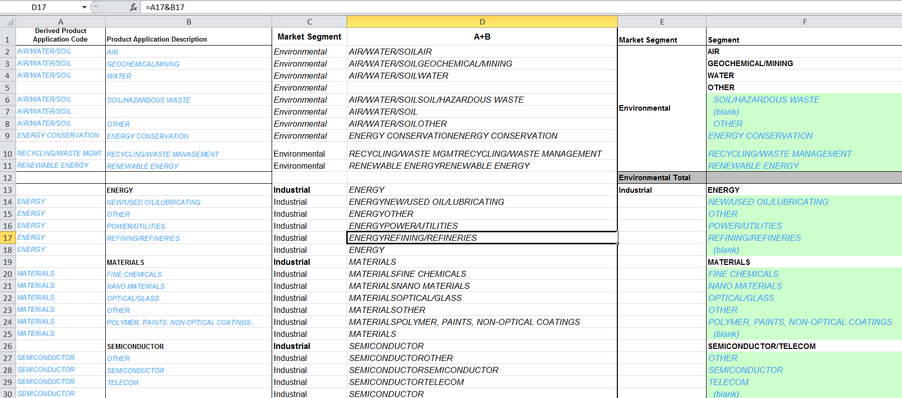
哪一种看上去数据更清晰？哪一种看上去格式更美观？哪一种看去心情更舒畅？我想答案是显而易见的。干净漂亮而又优雅简约的Excel表格不仅仅可以提高自己的工作效率，更重要的是能够展现出高水准的专业素养，从而使你在职场中占得一定的先机。
因此我们总结的Excel之道就是四个字：「优雅简约」。
-所谓的「优雅简约」需要满足以下五个原则：
简约性--简约并不意味着会简单，简约可以减少犯错的可能，同时能让不熟悉你所构建的Excel数据模型的的人也能轻松的读懂并理解你想展示的结果和和表达的信息。
可追踪性--尤其是计算以及分析步骤的可追踪，可以让没有参与某个Excel数据模型构建过程的人员也可以很快的弄清楚数据的来龙去脉，而不用绞尽脑汁去探寻和摸索数据之间的关系。
一致性--尽量确保数据的输入输出规范、变量的命名规则、图表显示格式的一致，使数据模型整体上更易于理解。
适应性--公式的设计要合理而具有弹性，可以在避免巨大的公式变更的前提下，快速、高效、准确的根据输入条件和假设的变更而调整数据模型。
易用性--通过简约的数据模型辅以完善的说明文档，使得即便是将数据模型转交给并不专业的人员，也可以通过简单的学习就可以获取到数据模型所要表达的信息，而不是需要一个很陡峭的学习曲线来从头学习一遍Excel。
-那么怎么样才能实现如上所说的Excel「优雅简约」之道呢？我为大家准备了下面九个要点：
1.时刻准备着面见客户
人们一般认为，Excel是一个分析和组织数据的工具。然而，实际上Excel更是一个帮助我们沟通和展示我们的发现的媒介和可交付物，当我们创建和交付其他的文件诸如PPT、PDF、Word时，我们总是会考虑很多方方面面的展示细节，以使我们的客户可以准确快速的把握我们所要表达的意思。同样，交付Excel时，也要有这方面的考虑，比如以下点个方面：
a.别人可以跟上我构建的Excel数据模型的思路吗？当他们打开我的Excel文件时，他们是否可以方便地找到他们想要的信息？
b.Excel文件中是否有清晰的注释消息？大段大段的数据是否有摘要信息？
c.Excel文件中的数据是否有合理的排序？是否有合适的筛选条件？
d.每个工作表的最左上角是否有选定单元格的信息，使用者可以迅速的知道现在所处的位置？
e.Excel文件是否可以被美观的打印？
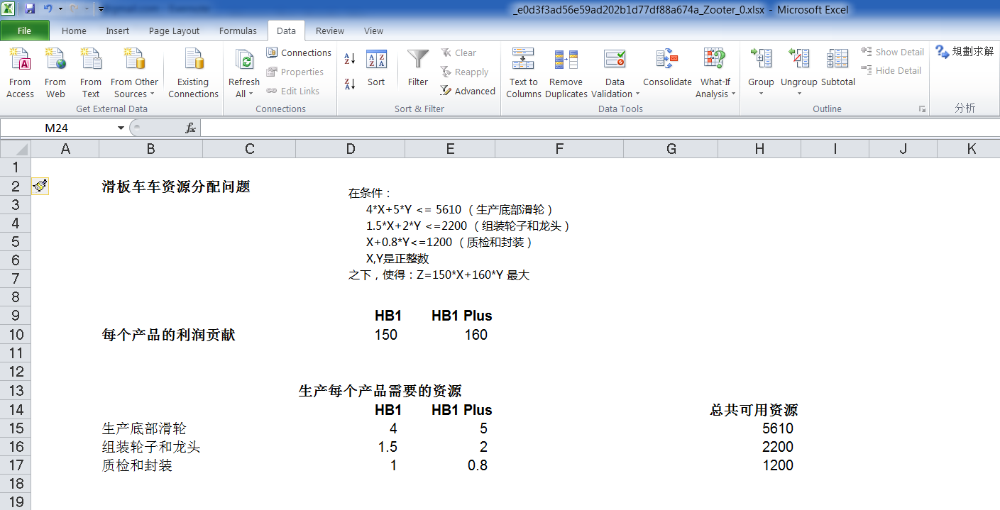
2.坚持结果导向
在创建工作表之前，仔细思考最终产出的结果是什么，以及怎么样构建数据模型可以达成最终目的是非常有必要的。可以先把思路写成一个「故事板」来帮助实现最终目标。
在构建「故事板」的时候可以考虑以下要点：
a.为最终的输出结果构建摘要信息和工作表结构。
b.根据可以想到的逻辑将数据存放到相应的工作表中。
c.决定最终如何展示信息，展示原始数据呢还是有些图表呢？
d.工作表的核心组件有哪些，如何展现并影响最终的结果，比如：输入输出是什么，工作表的描述，整个文件和数据的更新日志等。
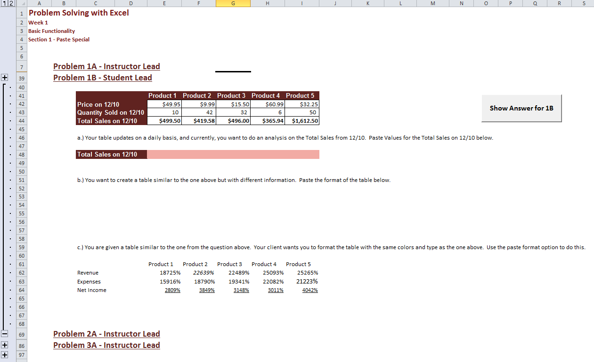
3.从合适的模版开始
如果可以从一个现有的模版开始工作相比从空白文件开始效率可以得到很大的提高。
可以把平时常用的数据模型结构和样式保存成模版。
发现其他人有好的Excel文档的时候也可以保存到自己的模版库中，方便今后使用，因为「借用」是学好Excel的基本手段。
另外在保存模板的时候要按照统一的命名规则保存，并可以追溯版本，以便自己未来的使用。
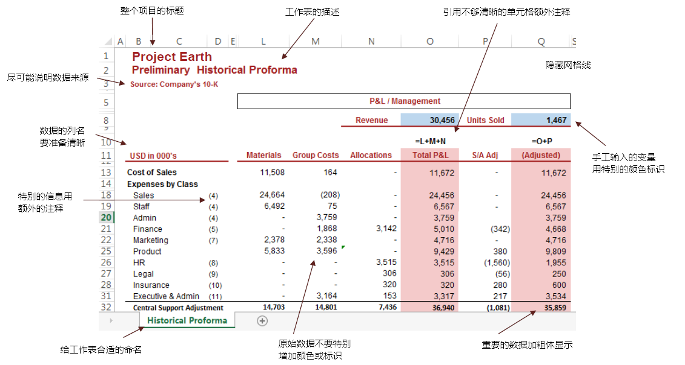
4.格式化数据显示
对数据的格式化在某种程度上可以说是你的Excel文件最重要的一个方面了，因为这决定了你的Excel甚至是你本人给他人的第一印象。
a.确保标题和描述在工作表的左上角
b.给每一个标签（工作表）起一个准确的名字以方便信息查找
c.移除网格线以便数据可以清晰的展示
d.将你的工作表保存成可使用的格式：保存时都激活第一个单元格A1，打印预览每一个工作表
e.不要轻易隐藏行或列，而是使用分组的方式，以便使用者清晰的知道还要哪些信息没有显示
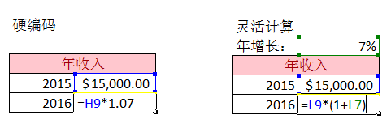
5.避免使用硬编码
硬编码会大大降低灵活性和可追溯性并且增加出错的风险，因此条件允许的情况下尽可能使用公式。
不要更改原始数据，而是引用原始数据，并在此基础上进行增、删、改的操作。
对于公式计算的数据结果和手工输入的数据采用不同的显示格式进行区分。
合并单元格的时候必须小心，会导致很难整列或整行的移动数据或者基于此应用公式。
隐藏数据的时候也要当心，很容易在多选的时候不小心选到隐藏的内容而自己不知道。
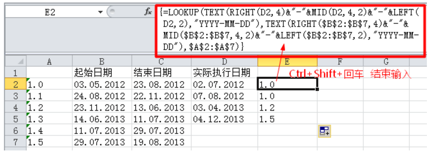
6.分解复杂的公式
保证在你的Excel中所使用的公式尽量简单易读，一来方便他人追溯数据的来龙去脉，另一方面回头自己检查起来也比较方便。看上去使用一个很长的复杂的公式很酷，而且行或列会占用的比较少，但是很容易出现错误并无法被发现，他人理解起来也很困难，并且无法快速的修改和编辑。
因此，当你知道你想要输出什么，但是又不是很明确如何得到最终结果的时候，可以把计算的步骤一步一步体现在数据模型里。
7.认真仔细地检查
八成Excel里的数据都是存在着错误的，甚至有很多是低级错误，那么怎样可以找出这些错误呢？
a.使用「Trace Precedents」和「Trace Dependents」功能，可以检查公式的引用是否正确。
b.为引用的外部数据添加注释。
c.打印出数据表，并用计算机进行手工验证。
d.通篇浏览文件内容排除低级错误。
e.厘清所有数据和公式的正负号。
f.使用公式的单步执行功能验证有疑问的公式。
g.记录下文件的修改日志。

8.善于在线寻找指南和帮助
互联网着实是我们的好朋友。没有一个人可以完全的熟悉Excel里的每一个公式或功能，但是每当你遇到任何问题的时候，你要相信你肯定不是第一个遇到同样问题的人，网络上必定有一批小伙伴已经遇到过，并且也有了类似问题的解决方法。
当然在搜索和寻找的时候也有一些技巧：
a.考虑清楚搜索的关键字，可以试一试不同的Excel术语。
b.把复杂问题分解为几个简单的小问题。
c.把每个小问题的答案组合或拼凑成完整的解决方案。
d.分析公式的语法，理解背后的机理以期实现你要的功能。
e.有时候需要质疑自己是否把问题考虑的太复杂了？
9.使用快捷方式
介绍十个可以帮你大大提高效率的快捷方式：
快速求和？用 「 Alt + = 」 。
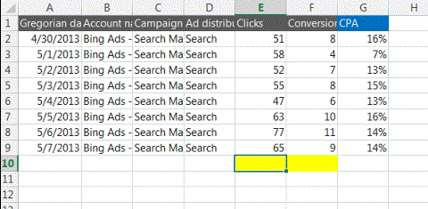
快速选定不连续的单元格。
按下组合键「 Shift+F8 」 ，激活 「 添加选定 」 模式，此时工作表下方的状态栏中会显示出「 添加到所选内容 」字样，以后分别单击不连续的单元格或单元格区域即可选定，而不必按住Ctrl键不放。
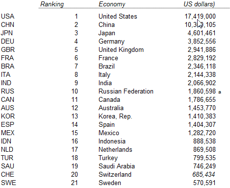
改变数字格式
Excel的快捷键并不是杂乱无章的，而是遵循了一定的逻辑。比如你想快速改变数字的格式，比如
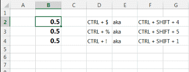
一键展现所有公式 「CTRL + ` 」
当你试图检查数据里有没有错误时，
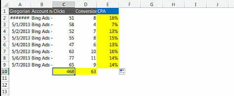
双击实现快速应用函数
同一个函数就不用一个一个敲啦。当你设置好了第一行单元格的函数，只需要把光标移动到单元格的右下角，等到它变成一个小加号时，双击，公式就会被应用到这一列剩下的所有单元格里。
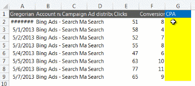
快速增加或删除一列
当你想快速插入一列时，键入Ctrl + Shift + ‘=’ （Shift + ‘=’其实就是+号啦）就能在你所选中那列的左边插入一列，而Ctrl + ‘-‘（减号）就能删除你所选中的一列。
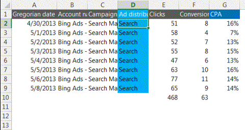
快速调整列宽
想让Excel根据你的文字内容自动调整列宽？你只需要把鼠标移动到列首的右侧，双击一下就大功告成啦~
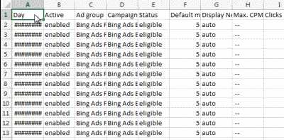
双击格式刷
格式刷当然是一个伟大的工具。不过，你知道只要双击它，就可以把同一个格式 「 刷 」给多个单元格么？
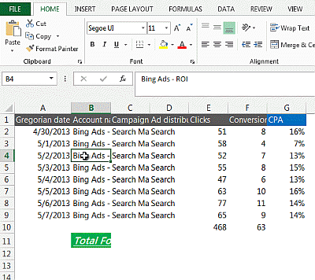
在不同的工作表之间快速切换
在不同的工作表之间切换，不代表你的手真的要离开键盘（可以想象如果你学会了这些酷炫狂拽的快捷键，你根本不需要摸鼠标）。 「 Ctrl + PgDn 」 可以切换到右边的工作表，反之， 「Ctrl + PgUp 」可以切换回左边。
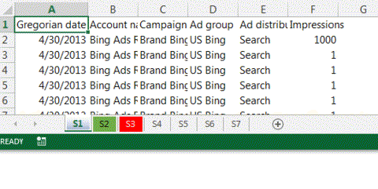
用F4锁定单元格
在Excel里根据函数填充数据的时候，有时候你希望你引用的单元格下拉时随之变化，也有时候你并不这么想。当你要 「绝对引用 」——也就是锁定单元格的时候，你必须在行列前加$符号。想手动去打这些美元符号？简直是疯了… 其实有一个简单的技巧，就是在你选定单元格之后，按F4键输入美元符号并锁定；如果你继续按F4，则会向后挨个循环：锁定单元格、锁定数字、锁定大写字母、解除锁定。
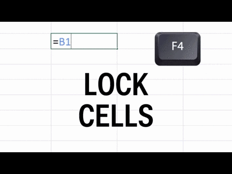
最后教大家另外一个快速熟悉和掌握快捷健的法门，就是按下Alt键的时候，会看到菜单上所有的功能都会出现一个字母提示，紧接着再按下相应的字母就能进入到对应的菜单或是打开对应的功能，因此常常使用这样的Alt+字母，很快就能记住自己平时用得最多一些功能的快捷操作方式了。
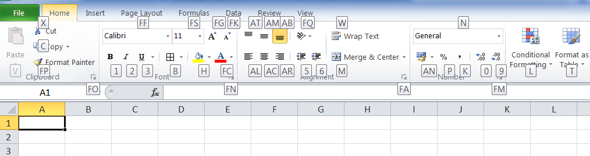
–尾声
不知道大伙觉得以上心法是否有助于掌握Excel的使用精髓，希望今后打开您的Excel文件，扑面而来的都是「优雅」的气息。接下来我们马上会出一篇续集，在那里将会着重介绍Excel外部招数的修炼法门：「让你告别愚蠢的Excel操作技巧」、「快速高效修理数据的套路」、「淘气的VLOOKUP」、和「帮你提升逼格的PIVOT」等。敬请关注！